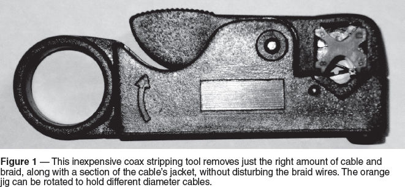
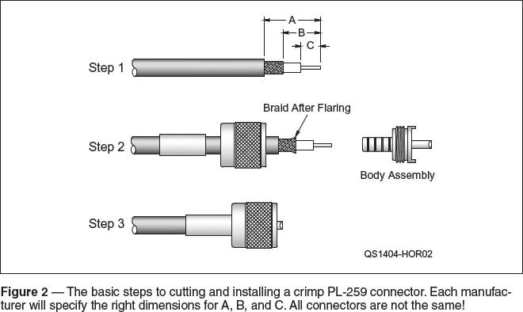
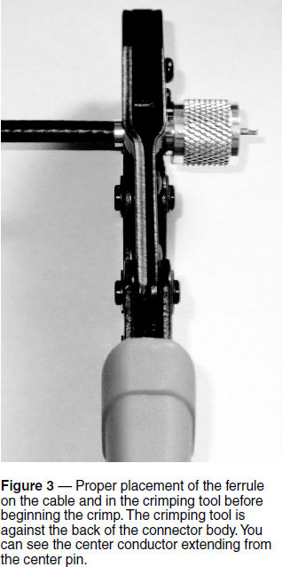
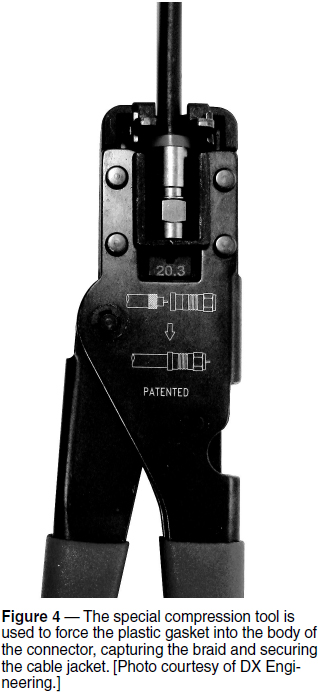

RF Techniques
Experiment #135 — Crimp Connectors
If there is one experience shared by nearly every radio amateur since World War II, it is the chore known as “the putting on of the connectors.” In particular, it is the coaxial connector of which I speak, usually a PL-259 and often with a UG-175 or UG-176 adapter. In recent years, the connector installation game has been changed dramatically by reliable, easily installed connectors that attach to the cable by crimping. While not suitable for every application, the crimp connector satisfies the needs of most hams pretty effectively. This month’s column discusses PL-259 and Type F crimp connectors, the types most commonly encountered.
Why Not Solder?
There are some very good reasons for using a soldered connector. In a complex station with many strong signals present (such as at a big multiop contest operation) the slight improvement in shield connection resistance can make a big difference in keeping harmonics and intermodulation products off the air and out of receivers on other bands. Another example is for connectors exposed to the weather. A solidly soldered connector that is exposed to the weather may resist water incursion or corrosion a little better than a crimped connector, although both must be thoroughly waterproofed.
Nevertheless, I cannot count the number times I have unscrewed the backshell of a PL-259 (someone else’s, of course!) and found the shield loose or hanging by a few wires, balls of solder that make little or no contact with the body of the connector, or even no solder whatsoever! While it would be great if all hams could turn out smooth, filleted, shiny soldered connectors, it would be much more reasonable to provide a simpler method that everyone can perform properly. Enter the crimp connector.
Crimp Connector Basics
The military, telecom, and aerospace firms discovered decades ago that for connections experiencing vibration or those exposed to the air’s moisture and contaminants, a “gas-tight” metal-to-metal crimp was actually more reliable than the best soldering job. We can gain the benefit of their hard-won experience.
This column is not a detailed, step-by-step “how-to” for installing crimp connectors. Each manufacturer provides detailed instructions and all the necessary tooling to perform the job correctly. If you do not follow those instructions, you will not reap the benefits of crimping and your connections will be less reliable than soldering. Resist the urge to “cheap out.” Learn the right techniques, use the right tools, and you will be amazed at how quickly you can install connectors reliably and inexpensively.
The primary goal of crimp connectors for coaxial cable is to create a reliable connection to the braided shield while maintaining the wire-to-wire connections between the wires making up the braid. Once the shield braid is no longer held in place by the jacket, the wires begin to loosen and oxidize, so the braid begins acting less and less like a solid tube of metal. The crimp connection re-captures the braid wires and holds them firmly against each other between two tubular sleeves (the PL-259) or between the body of the connector and a shoulder gasket that slides into place (the Type F). For the crimped connection to last and to resist vibration and stress, a certain minimum force must be applied and the crimping surfaces have to be properly aligned. That’s why it is important to trim the cable correctly and to use the racheting tool to apply the crimping pressure.
The first step toward a successful crimp is proper preparation of the cable. I highly recommend that you use the “automatic” stripping tools — such as the one shown in Figure 1. Each type of crimp connector requires the removal of a specific length of jacket and braid, so use the right stripping tool or cutting die for your cable and connector.

Start by cutting the end of the cable cleanly and at right angles to its length. If the cable is flattened, use pliers to gently squeeze it back to approximate roundness. Open the stripping tool and insert the cable until it is against the stop or at the specified position.
Close the tool and spin it around the cable. You do not have to squeeze the tool’s cutting blades against the cable — the tool will apply the needed pressure. You will first hear the blades crunching through the braid then the tool will begin to turn smoothly and silently. After a couple of smooth turns, stop turning and remove the cable from the tool without opening the tool. Gently pull off the sections of jacket, braid, and dielectric. You can do this with a knife but it takes a lot longer, isn’t as precise, and usually messes up the braid.
Crimping PL-259 Connectors
Figure 2 shows the basic steps for installing a crimp PL-259 connector. I have found that on the larger cables, after the initial cuts, you may need to rock the tool back and forth a little as you pull the tool and cut sections off the cable. This breaks any small threads of dielectric surrounding the center conductor that weren’t cut. For stranded center conductors, a gentle twist of the tool in the direction in which the strands are wound often helps the cut sections come off more easily. Remember, try to disturb the braid and center conductor as little as possible!

Before inserting the cable into the body of the connector, be sure that a stranded center conductor does not have loose strands that might not go into the hollow center pin. Those strands will contact the connector body, creating a short circuit. Twist any loose strands back together with the main conductor. For large-diameter cables with stranded conductors, count the strands when they emerge from the center pin. Now check to be sure you put the outer crimp ferrule and outer shell on the cable!
As you insert the cable into the connector, slide the crimping tube under the braid very gently and straight along the cable. You may have to flare the braid a little bit to get the crimping tube under the braid. Remember, minimum braid disturbance! With the braid all the up to the body of the connector, the center conductor should emerge from or be flush with the end of the connector’s center pin. Verify that all of the strands of center conductor got into the center pin, with an ohmmeter check between the shell and center pin for short circuits.
Slide the ferrule up and over the exposed braid. The jacket of the cable should extend into the end of the ferrule, ie — no braid should be exposed. Open the crimping tool and lay the crimping ferrule into the crimping die with the tool against the back of the connector body as in Figure 3. Squeeze until you hit the last click and the tool releases. Inspect the ferrule for equal indentations on all sides and that the cable is not loose in any way. Now crimp or solder the center conductor in the center pin. I like soldering the center pin to seal it against water. You’re done!

Crimping Type F Connectors
The basic process and cautionary steps are all similar to PL-259 connectors — using the right stripping tool, and crimping with the right tool and die sizes. Designed for use with RG-6 TV cable, there are two types of Type F crimp connectors. Most sleeve-type connectors are one-piece designs. You crimp the connector’s outer sleeve onto the inner sleeve with the braid captured between them. There is no separate ferrule to slide over the cable jacket and the center conductor of RG-6 cable is copper-plated steel that forms the connector’s center pin.
The compression-style Type F connectors are sturdier and more robust. They capture the braid between the inner body of the connector and a sliding shoulder gasket that is compressed into the body of the connector with a special tool. The braid is flared back over the jacket before the cable is inserted into the connector. The connector and cable are placed into the crimping tool as shown in Figure 4 and the gasket forced into the connector to capture the braid and cable. The plastic gasket also squeezes the cable jacket to keep water out. More detailed drawings for installing Type F and several other consumer-type connectors are available online, such as the Ideal Multi-Media Installation Guide.1

Crimp — Your Style?
The ease of installation is not a panacea. Crimp connectors may not be suitable in high-stress or high-EMI environments. Waterproofing is even more important for crimp connectors and many top station owners use only soldered connectors outside. Nevertheless, the expense of special crimping tools and coax strippers is worthwhile and numerous QST advertisers offer kits that work with a variety of cable sizes. In the end you’ll be glad you learned how to use crimp connectors!
Notes
1www.idealindustries.com/media/pdfs/products/guides/p-2804_multi-media_installation_guide.pdf